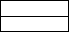
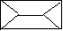
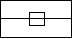
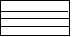
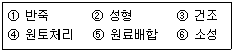
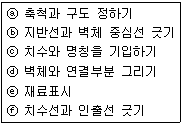
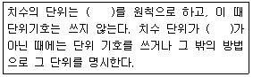
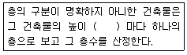
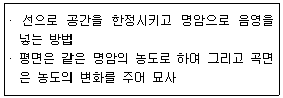

전산응용건축제도기능사 (2014-07-20 기출문제)
1과목: 건축구조
1. 절충식구조에서 지붕보와 처마도리의 연결을 위한 보강 철물로 사용되는 것은?
- 주걱볼트
- 띠쇠
- 감잡이쇠
- 갈고리 볼트
(정답률: 60%)

2. 채광만을 목적으로 하고 환기를 할 수 없는 밀폐된 창은?
- 회전창
- 오르내리창
- 미닫이창
- 붙박이창
(정답률: 92%)
3. 건물의 하부 전체 또는 지하실 전체를 하나의 기초판으로 구성한 기초는?
- 독립기초
- 줄기초
- 복합기초
- 온통기초
(정답률: 86%)
4. 철근콘크리트 단순보의 철근에 관한 설명 중 옳지 않은 것은?
- 인장력에 저항하는 재축방향의 철근을 보의 주근이라 한다.
- 압축측에도 철근을 배근한 보를 복근보라 한다.
- 전단력을 보강하여 보의 주근 주위에 둘러서 감은 철근을 늑근이라 한다.
- 늑근은 단부보다 중앙부에서 촘촘하게 배치하는 것이 원칙이다.
(정답률: 70%)
5. 보와 기둥 대신 슬래브와 벽이 일체가 되도록 구성한 구조는?
- 라멘 구조
- 플랫슬래브 구조
- 벽식 구조
- 아치 구조
(정답률: 68%)
6. 송풍에 의한 내압으로 외기압보다 약간 높은 압력을 주고, 압력에 의한 장력으로 공간 및 구조적인 안정성을 추구한 건축구조는?
- 절판 구조
- 공기막 구조
- 셸 구조
- 현수 구조
(정답률: 85%)
7. 그림 중 꺾인지붕(curb roof)의 평면모양은?




(정답률: 73%)
8. 다음 중 압축력이 발생하지 않는 구조시스템은?
- 케이블 구조
- 트러스 구조
- 절판 구조
- 철골 구조
(정답률: 68%)
9. 가구식 구조에 대한 설명으로 옳은 것은?
- 개개의 재료를 접착제를 이용하여 쌓아 만든 구조
- 목재, 강재 등 가늘고 긴 부재를 접합하여 뼈대를 만드는 구조
- 철근콘크리트구조와 같이 전 구조체가 일체가 되도록 한 구조
- 물을 사용하는 공정을 가진 구조
(정답률: 77%)
10. 주로 철재 또는 금속재 거푸집에 사용되는 철물로서 지주를 제거하지 않고 슬래브 거푸집만 제거할 수 있도록 한 것은?
- 드롭헤드
- 컬럼밴드
- 캠버
- 와이어클리퍼
(정답률: 57%)
11. 블록조의 테두리보에 대한 설명으로 옳지 않은 것은?
- 벽체를 일체화하기 위해 설치한다.
- 테두리보의 너비는 보통 그 밑의 내력벽의 두께보다는 작아야 한다.
- 세로철근의 끝을 장착할 필요가 있을 때 정착 가능하다.
- 상부의 하중을 내력벽에 고르게 분산시키는 역할을 한다.
(정답률: 61%)
12. 목조 왕대공 지붕틀에서 압축력과 휨모멘트를 동시에 받는 부재는?
- 빗대공
- 왕대공
- ㅅ자보
- 평보
(정답률: 75%)
13. 목구조에서 토대와 기둥의 맞춤으로 가장 알맞은 것은?
- 짧은 장부 맞춤
- 빗턱 맞춤
- 턱솔 맞춤
- 걸침턱 맞춤
(정답률: 60%)
14. 난간벽, 부란, 박공벽 위에 덮은 돌로서 빗물막이와 난간 동자받이의 목적 이외에 장식도 겸하는 돌은?
- 돌림띠
- 두겁돌
- 창대돌
- 문지방돌
(정답률: 54%)
15. H형강, 판보 또는 래티스보 등에서 보의 단면 상하에 날개처럼 내민 부분을 지칭하는 용어는?
- 웨브
- 플랜지
- 스티프너
- 거셋 플레이트
(정답률: 59%)
16. 상대적으로 얇고 길이가 짧은 부재를 상하 그리고 경사로 연결하여 장스팬의 길이를 확보할 수 있는 구조는?
- 철근콘크리트구조
- 블록구조
- 트러스 구조
- 프리스트레스트 구조
(정답률: 62%)
17. 목조벽체를 수평력에 견디게 하고 안정한 구조로 하는데 필요한 부재는?
- 멍에
- 장선
- 가새
- 동바리
(정답률: 78%)
18. 벽돌벽체 내쌓기에서 벽체의 내밀 수 있는 한도는?
- 1.0B
- 1.5B
- 2.0B
- 2.5B
(정답률: 78%)
19. 강구조에 관한 설명 중 옳지 않은 것은?
- 내구, 내화적이다.
- 좌굴의 가능성이 있다.
- 철근콘크리트조에 비해 경량이다.
- 고층건물이나 장스팬구조에 적당하다.
(정답률: 48%)
20. 모임지붕, 합각지붕 등의 측면에서 동자주를 세우기 위하여 처마도리와 지붕보에 걸쳐 댄 보를 무엇이라 하는가?
- 서까래
- 우미량
- 중도리
- 충량
(정답률: 47%)
2과목: 건축재료
21. 생석회와 규사를 혼합하여 고온, 고압하에 양생하면 수열반응을 일으키는데 여기에 기포제를 넣어 경량화한 기포콘크리트는?
- A.L.C제품
- 흉관
- 드리졸
- 플렉시블보오드
(정답률: 75%)
22. 단위 질량의 물질을 온도1℃ 올리는데 필요한 열량을 무엇이라 하는가?
- 열용량
- 비열
- 열전도율
- 연화점
(정답률: 76%)
23. 공동(空胴)의 대형 점토제품으로써 주로 장식용으로 난간벽, 돌림대, 창대 등에 사용되는 것은?
- 이형벽돌
- 포도벽돌
- 테라코타
- 테라죠
(정답률: 78%)
24. 다음 수종 중 침엽수가 아닌 것은?
- 소나무
- 삼송나무
- 잣나무
- 단풍나무
(정답률: 77%)
25. 실리카시멘트에 대한 설명 중 옳은 것은?
- 보통 포틀랜드 시멘트에 비해 초기강도가 크다.
- 화학적 저항성이 크다.
- 보통 포틀랜드 시멘트에 비해 장기강도는 작은 편이다.
- 긴급공사용으로 적합하다.
(정답률: 50%)
26. 점토제품의 제법순서를 옳게 나열한 것은?

- ④-⑤-①-②-③-⑥
- ①-②-③-④-⑤-⑥
- ②-③-⑥-④-⑤-①
- ③-⑥-⑤-②-④-①
(정답률: 82%)
27. 목재의 방부제 중 수용성 방부제에 속하는 것은?
- 크레오소트 오일
- 불화소다 2% 용액
- 콜타르
- PCP
(정답률: 63%)
28. 목재의 섬유 평행방향에 대한 강도 중 가장 약한 것은?
- 휨강도
- 압축강도
- 인장강도
- 전단강도
(정답률: 51%)
29. 탄소함유량이 증가함에 따라 철에 끼치는 영향으로 옳지 않은 것은?
- 연신율의 증가
- 항복강도의 증가
- 경도의 증가
- 용접성의 저하
(정답률: 45%)
30. 미장재료에 대한 설명 중 옳은 것은?
- 회반죽에 석고를 약간 혼합하면 경화속도, 강도가 감소하며 수축균열이 증대된다.
- 미장재료는 단일재료로서 사용되는 경우보다 주로 복합재료로서 사용된다.
- 결합재에는 여물, 풀등이 있으며 이것은 직접 고체화에 관계한다.
- 시멘트 모르타르는 기경성 미장재료로써 내구성 및 강도가 크다.
(정답률: 55%)
31. 구조 재료에 요구되는 성질과 가장 관계가 먼 것은?
- 재질이 균일하여야 한다.
- 강도가 큰 것이어야 한다.
- 탄력성이 있고 자중이 커야 한다.
- 가공이 용이한 것이어야 한다.
(정답률: 71%)
32. 목재의 기건상태의 함수율은 평균 얼마 정도인가?
- 5%
- 10%
- 15%
- 30%
(정답률: 81%)
33. 시멘트의 저장 방법 중 틀린 것은?
- 주위에 배수 도랑을 두고 누수를 방지한다.
- 채광과 공기 순환이 잘 되도록 개구부를 최대한 많이 설치한다.
- 3개월 이상 경과한 시멘트는 재시험을 거친 후 사용한다.
- 쌓기 높이는 13포 이하로 하며, 장기간 저장시는 7포 이하로 한다.
(정답률: 80%)
34. 다음 도료 중 안료가 포함되어 있지 않은 것은?
- 유성페인트
- 수성페인트
- 합성수지도료
- 유성바니쉬
(정답률: 58%)
35. 금속의 부식방지법으로 틀린 것은?
- 상이한 금속은 접촉시켜 사용하지 말 것
- 균질의 재료를 사용할 것
- 부분적인 녹은 나중에 처리할 것
- 청결하고 건조상태를 유지할 것
(정답률: 88%)
36. 콘크리트의 강도에 대한 설명 중 옳은 것은?
- 물-시멘트비가 가장 큰 영향을 준다.
- 압축강도는 전단강도의 1/10 ~ 1/15 정도로 작다.
- 일반적으로 콘크리트의 강도는 인장강도를 말한다.
- 시멘트의 강도는 콘크리트의 강도에 영향을 끼치지 않는다.
(정답률: 70%)
37. 블론 아스팔트를 휘발성 용제로 희석한 흑갈색의 액체로서, 콘크리트, 모르타르 바탕에 아스팔트 방수층 또는 아스팔트 타일 붙이기 시공을 할 때 사용되는 것은?
- 아스팔트 코팅
- 아스팔트 펠트
- 아스팔트 루핑
- 아스팔트 프라이머
(정답률: 63%)
38. 합성수지 재료는 어떤 물질에서 얻는가?
- 가죽
- 유리
- 고무
- 석유
(정답률: 75%)
39. 수장용 금속제품에 대한 설명으로 옳은 것은?
- 줄눈대 – 계단의 디딤판 끝에 대어 오르내릴 때 미끄럼을 방지한다.
- 논슬림 – 단면형상이 L형, I형 등이 있으며, 벽, 기둥 등의 모서리 부분에 사용된다.
- 코너비드 – 벽, 기둥 등의 모서리 부분에 미장 바름을 보호하기 위해 사용된다.
- 듀벨 – 천장, 벽 등에 보드를 붙이고, 그 이음새를 감추는데 사용된다.
(정답률: 75%)
40. 목재의 장점에 해당하는 것은?
- 내화성이 좋다.
- 재질과 강도가 일정하다.
- 외관이 아름답고 감촉이 좋다.
- 함수율에 따라 팽창과 수축이 작다.
(정답률: 74%)
3과목: 건축계획 및 제도
41. 주거공간을 주행동에 의해 개인공간, 사회공간, 가사노동공간 등으로 구분할 경우, 다음 중 사회공간에 속하는 것은?
- 서재
- 식당
- 부엌
- 다용도실
(정답률: 73%)
42. 온수난방과 비교한 증기난방의 특징으로 옳지 않은 것은?
- 예열시간이 짧다.
- 열의 운반능력이 크다.
- 난방의 쾌감도가 높다.
- 방열면적을 작게 할 수 있다.
(정답률: 69%)
43. 조적조 벽체를 제도하는 순서로 가장 알맞은 것은?

- ⓐ - ⓑ - ⓒ - ⓓ - ⓔ - ⓕ
- ⓐ - ⓑ - ⓓ - ⓕ - ⓔ - ⓒ
- ⓐ - ⓑ - ⓓ - ⓔ - ⓕ - ⓒ
- ⓐ - ⓕ - ⓑ - ⓒ - ⓓ - ⓔ
(정답률: 62%)
44. 부엌의 일부분에 식사실을 두는 형태로 부엌과 식사실을 유기적으로 연결하여 노동력 절감이 가능한 것은?
- D(dining)
- DK(dining kitchen)
- LD(living dining)
- LK(living kitchen)
(정답률: 88%)
45. 제도에서 묘사에 사용되는 도구에 관한 설명으로 옳지 않은 것은?
- 물감으로 채색할 때 불투명 표현은 포스터 물감을 주로 사용한다.
- 잉크는 여러 가지 모양의 펜촉 등을 사용할 수 있어 다양한 묘사가 가능하다.
- 잉크는 농도를 정확하게 나타낼 수 있고, 선명하게 보이기 때문에 도면이 깨끗하다.
- 연필은 지울 수 있는 장점이 있는 반면에 폭넓은 명암이나 다양한 질감 표현이 불가능하다.
(정답률: 82%)
46. 고딕성당에서 존엄성, 엄숙함 등의 느낌을 주기 위해 사용된 선은?
- 사선
- 곡선
- 수직선
- 수평선
(정답률: 80%)
47. 주택의 동선계획에 관한 설명으로 옳지 않은 것은?
- 동선에는 독립적인 공간을 두지 않는다.
- 동선은 가능한 짧게 처리하는 것이 좋다.
- 서로 다른 동선은 교차하지 않도록 한다.
- 가사노동의 동선은 가능한 남측에 위치시킨다.
(정답률: 59%)
48. 건축물의 에너지절약을 위한 단열계획으로 옳지 않은 것은?
- 외벽 부위는 내단열로 시공한다.
- 건물의 창호는 가능한 작게 설계한다.
- 태양열 유입에 의한 냉방부하 저감을 위하여 태양열 차폐장치를 설치한다.
- 외피의 모서리 부분은 열교가 발생하지 않도록 단열재를 연속적으로 설치하고 충분히 단열되도록 한다.
(정답률: 48%)
49. 소방시설은 소화설비, 경보설비, 피난설비, 소화용수설비, 소화활동설비로 구분할 수 있다. 다음 중 경보설비에 속하지 않는 것은?
- 누전경보기
- 비상방송설비
- 무선통신보조설비
- 자동화재탐지설비
(정답률: 69%)
50. 주택지의 단위 분류에 속하지 않는 것은?
- 인보구
- 근린분구
- 근린주구
- 근린지구
(정답률: 73%)
51. 실제길이가 16m인 직선을 축척이 1/200인 도면에 표현할 경우, 직선의 도면 길이는?
- 0.8mm
- 8mm
- 80mm
- 800mm
(정답률: 76%)
52. 배수관 속의 악취, 유독 가스 및 벌레 등이 실내로 침투하는 것을 방지하기 위하여 설치하는 것은?
- 트랩
- 플랜지
- 부스터
- 스위블이음쇠
(정답률: 86%)
53. 다음은 건축도면에 사용하는 치수의 단위에 대한 설명이다. ( )안에 공통으로 들어갈 내용은?

- cm
- mm
- m
- Nm
(정답률: 91%)
54. 할로겐 램프에 관한 설명으로 옳지 않은 것은?
- 휘도가 높다.
- 청백색으로 연색성이 나쁘다.
- 흑화가 거의 일어나지 않는다.
- 광속이나 색온도의 저하가 적다.
(정답률: 65%)
55. 스킵플로어형 공동주택에 관한 설명으로 옳지 않은 것은?
- 복도 면적이 증가한다.
- 엑세스(access) 동선이 복잡하다.
- 엘리베이터의 정지 층수를 줄일 수 있다.
- 동일한 주거동에 각기 다른 모양의 세대 배치계획이 가능하다.
(정답률: 48%)
56. 다음 중 단면도를 그려야 할 부분과 가장 거리가 먼 것은?
- 설계자의 강조부분
- 평면도만으로 이해하기 어려운 부분
- 전체구조의 이해를 필요로 하는 부분
- 시공자의 기술을 보여주고 싶은 부분
(정답률: 82%)
57. 도면 각 부분의 표기를 위한 지시선의 사용방법으로 옳지 않은 것은?
- 지시선은 곡선사용을 원칙으로 한다.
- 지시대상이 선인 경우 지적부분은 화살표를 사용한다.
- 지시대상이 면인 경우 지적부분은 채워진 원을 사용한다.
- 지시선은 다른 제도선과 혼동되지 않도록 가늘고 명료하게 그린다.
(정답률: 76%)
58. 다음은 건축물의 층수 산정에 관한 기준 내용이다.( )안에 알맞은 것은?

- 2.5m
- 3m
- 3.5m
- 4m
(정답률: 75%)
59. 다음에서 설명하는 묘사방법으로 옳은 것은?

- 단선에 의한 묘사방법
- 명암 처리만으로의 방법
- 여러 선에 의한 묘사방법
- 단선과 명암에 의한 묘사방법
(정답률: 76%)
60. 한국산업표준(KS)에 따른 건축도면에 사용되는 척도에 속하지 않는 것은?
- 1/1
- 1/4
- 1/80
- 1/250
(정답률: 56%)